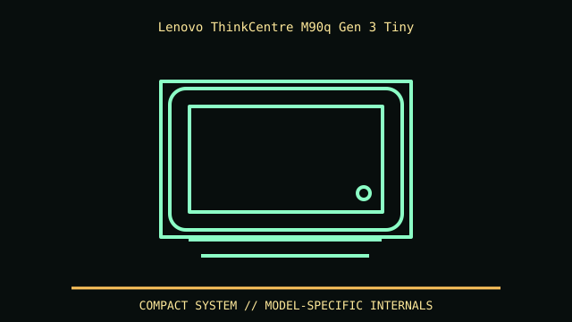

[ MODEL IDENTIFICATION // THINKCENTRE M90Q GEN 3 TINY ]
Lenovo ThinkCentre M90q Gen 3 Tiny
179 × 183 × 37 mm (W × D × H), Lenovo PSREF. Add cable/adaptor space and ventilation when VESA-mounted.

REVISION CAVEAT: Distinguish M90q Gen 3 from Gen 2/4 and M70q. Machine type determines storage, thermal module, WLAN and adapter options.
Specifications & fit
| Catalog subcategory | Office and mini-PC enclosures |
|---|---|
| Model / generation | ThinkCentre M90q Gen 3 Tiny |
| Dimensions / form factor / clearance | 179 × 183 × 37 mm (W × D × H), Lenovo PSREF. Add cable/adaptor space and ventilation when VESA-mounted. |
| Drive bays | M.2 plus optional 2.5-inch position; caddy, SATA cable and fasteners vary by machine configuration. |
| Compatibility | Proprietary Tiny motherboard, cooling and external adapter; not Mini-ITX despite similar footprint. |
| Revision identification | Distinguish M90q Gen 3 from Gen 2/4 and M70q. Machine type determines storage, thermal module, WLAN and adapter options. |
Compatibility & preservation notes
Proprietary Tiny motherboard, cooling and external adapter; not Mini-ITX despite similar footprint.
Retain 2.5-inch bracket, bezel screws and VESA parts. Clean compact blower path; match adapter wattage and model-specific mount screws.
- Record the complete model/SKU, serial/date label, board and bay/backplane identifiers, accessories and manual revision before disassembly.
- Verify the exact fan, radiator, PSU, riser, cable and drive configuration against manufacturer dimensions; a published maximum does not ensure every combination fits simultaneously.
- Keep original brackets, fasteners, trays, feet and front-panel parts labeled with the chassis. Do not force components into modified or incomplete specimens.
Manufacturer, archive & standards sources
- Lenovo — M90q Gen 3 PSREFPrimary manufacturer or technical-reference source for this named model; use the exact SKU/document revision.
- Lenovo — M90q Gen 3 product familyAdditional manufacturer, archival, or dimensional reference. Options and specimen condition can change fit.
Approximate or convention-dependent dimensions are marked as such. Measure the individual unit for restoration, shipping and installation.